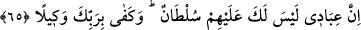

İblis: “Bana bir hadis/söz ver.” dedi.
Allah Teâlâ: “Yalan” buyurdu.
İblis: “Bana elçiler ver.” dedi.
Allah Teâlâ: “Kâhinler” buyurdu.
İblis: “Bana avlanmak için tuzaklar ver.” dedi.
Allah Teâlâ: “Kadınlar” buyurdu.”[116]
Bu rivâyet Semerkandî’nin Bahru’l-ulûm’unda geçmektedir.
İlâhlarının şefaatte bulunacağı, atalarının üstünlüğüne güvenme, emeli uzatarak
tevbeyi geciktirme, onlara cennet ve cehennem olmadığını haber verme ve benzeri
“kendilerine” bâtıl “vaadlerde bulun.” “Şeytan,” burada bilinen şeytanın veya şeytan
cinsinin kasdedilmiş olması da mümkündür. Hz. Peygamber (a.s.): “Sizin her birinizin
mutlaka bir şeytanı vardır.”[117] buyurmuştur. “İnsanlara, aldatmadan başka bir şey
vaadetmez.” Yâni şeytan hatayı sevab sûretinde süsler. “Gurûr”, hatâyı onun doğru
olduğunu vehmettirecek şekilde süslemektir.
Bahru’l-ulûm’da der ki: “Bu emirler, âsîlere ‘Dilediğinizi yapın.’ demek gibi tehdid
yollu söylenmiştir. Rezil rüsvay etmek ve kovmak için olduğu da söylenmiştir.”
65. Şurası muhakkak ki, benim (ihlâslı) kullarım üzerinde senin hiçbir ağırlığın
olmayacaktır. (Onlara) vekil olarak Rabbin yeter.
“Şurası muhakkak ki, benim (ihlâslı) kullarım üzerinde senin hiçbir ağırlığın
olmayacaktır.” Onları azdırmaya tasallut ve kudretin yoktur. Nitekim Allah Teâlâ:
“Gerçek şu ki: Îman edip de yalnız Rablerine tevekkül edenler üzerinde onun
(şeytanın) bir hâkimiyeti yoktur.” (en-Nahl, 16/99) buyurmuştur.
“Kullarım” ifâdesindeki izâfet şereflendirmek içindir. Onlar ihlâslı/samîmî kullardır.
Bu ifâdede şeytana tâbi olanların bu kullardan olmadığı anlamı vardır.
İmam Kuşeyrî der ki: “Hakk’ın kulu odur ki başkasının bendinde/kaydında olmaz.”
Şeyh Attâr şöyle der:
Yüz şeye kul olmuşsun, Hakk’a nasıl kul olursun?
Sen her şeyin kaydındayken Hudâ’ya nasıl bende olursun?
Onlara “vekil olarak Rabb’in yeter.” O’na tevekkül ederler, senin azdırmandan
kurtulmak için O’ndan yardım isterler, ey İblis!
et-Te’vîlâtü’n-Necmiyye’de şöyle der: Bu âyette işâret vardır ki Allah’ın kulları
kevneynin köleliğinden ve alâkalarından hürdürler. Dolayısıyla şeytan onları
köleleştiremez, onlara ilişmeye güç yetirip onları hak yoldan saptıramaz ve başka
şeylerle onları Allah’tan saptıramaz, uzaklaştıramaz. Onlar için saâdet vesîlelerini